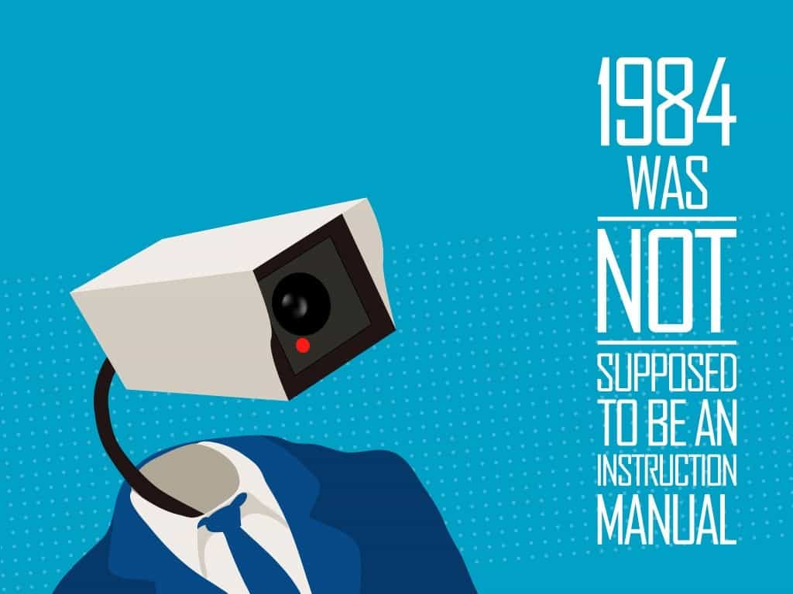
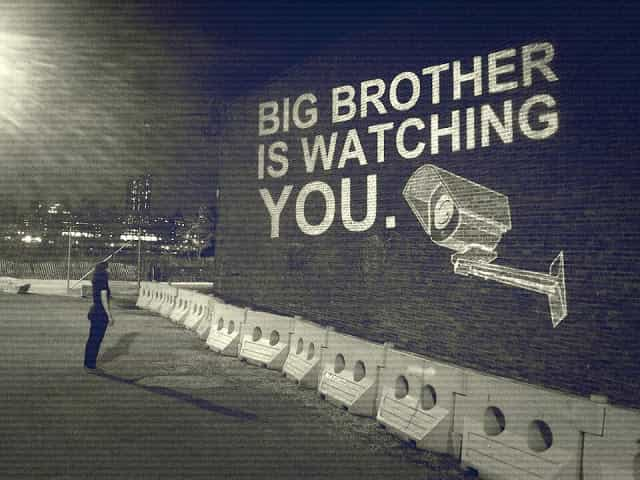

< < < Back
How Super Bowl 50 Confirmed The Arrival Of The Orwellian Surveillance State – Return Of Kings
Around 60 US government agencies found themselves involved in the unprecedented security arrangements for this year’s Super Bowl. And the measures they used, including message-reading cell phone scanners, facial tracking and matching systems, and highly responsive social media detection algorithms, sound more like the technology from Minority Report than what we would normally expect in 2016. Yet such devices have arrived and are certainly here to stay. What does this portend for society in general, not just at ephemeral sporting events?
Without detracting from the need to ensure safety at the world’s most famous annual sporting event, the set-up on display Sunday demonstrates the raw surveillance power that is being routinely turned onto average citizens. The concentration of this power at the Super Bowl may represent the height of such use, but significant daily intrusion, detectable or clandestine, has become the norm for Americans. Worse still, it will only grow in coming years.
The problems attached to the new means of surveillance are many, but two deserve particular emphasis. Firstly, arrangements like at the Super Bowl drastically undermine any pretence that America preserves for its citizen the freedom of old. If preserving freedom requires this level of government intervention, it would be better to reclassify America as the “Land of the Safe, Home of the Brave New World.”
Secondly, both the indulgent legal climate that permits mass surveillance and multiple new technologies lend themselves to the protection of an establishment agenda. If your political philosophy or programme falls outside an acceptable range, the government and bureaucracy has at its disposal massive tools with which to monitor, document and ultimately suppress it. Moreover, the vast tentacles of many agencies mean that proper oversight of these powers, where it has not already been waived, will be next to impossible to determine, let alone enforce.
Meet Jeh Johnson
Only a minority of Americans can recognize Jeh Johnson’s face. Even fewer remember who he actually is. As Secretary of Homeland Security since 2013, his role has been much quieter than some of his predecessors, especially the first person to ever hold the role, Tom Ridge, a George W. Bush appointee. The less prominent public profile of Johnson reflects the contemporary nature of the position. Electronic surveillance obviously existed in the first decade of the 2000s, but it has improved substantially since then. The human behavior-derived intelligence element has lost incredible ground to computers and state of the art information retrieval systems.
Expect this sort of half-faceless, low-key representation from the intelligence and security apparatus going forward. The name of the game has changed and the more mega-agencies like Homeland Security blend into the background the better. And, like traffic cameras at intersections, many of the nascent technologies will be incorporated into surroundings to make them less noticeable. Not out of secrecy, as citizens will intellectually know they are there or at least hypothetically exist, but rather to make people less consciously aware of them day-to-day.
Aside from ordeals such as dealing with the TSA at airports, the implementation of these technologies will paradoxically appear non-intrusive so that the government can intrude all the more into your life.
Initially benign use of surveillance can kill liberty just as easily

I grow tired of bizarre conspiracy theories predicated on Rothschilds and Bilderberg Groups. Yes, there is a globalist agenda. Nevertheless, it is not necessarily a monolithic one and many of the people pursuing it fundamentally believe they are doing the right thing. The same goes for often well-intentioned politicians, intelligence employees and other bureaucrats who make surveillance mechanisms possible. Good intentions only sometimes lead to good outcomes, however. The pursuit of the means to protect freedom is not mutually exclusive with the partial and then significant extinguishing of that same freedom.
Whenever we perceive a loss of freedoms, the automatic presumption is that the catalyst must be a James Bond film-style megalomaniac and his cronies. Dispel that idea, or at least open yourself up to the idea of the government as misguided, not just nefarious. Akin to a grey goo scenario, intelligence and surveillance communities can take on a life of their own, a more real life translation of the legal personality attributed to corporations. The internal cultures of these communities have snowball effects that shape society in marked ways, much more than the sum of the individuals working for them would suggest. Higher political and bureaucratic figures may be in charge of them; they do not always control them.
Are they already looking specifically at you?

Perhaps. You’re an ROK reader, after all. Police departments across the US promised to tail proposed tribal meet-ups Roosh had planned. The San Francisco Police Department is the most well-equipped in the world for monitoring citizens, as the Super Bowl exercise has proven, but many other forces are only relatively behind.
The people behind the screens are also amazingly like you and me. They have families, fears, and aspirations. Again, most of them believe legitimately in what they are doing. As history demonstrates ad nauseam, though, what we want to do or feel we do is not always what we get. Even freedom is something that you can chase so hard that you eventually lose it. And losing it for good is now a very real prospect for America and other Western nations.
Read More: Beware Of The Coming Surveillance State